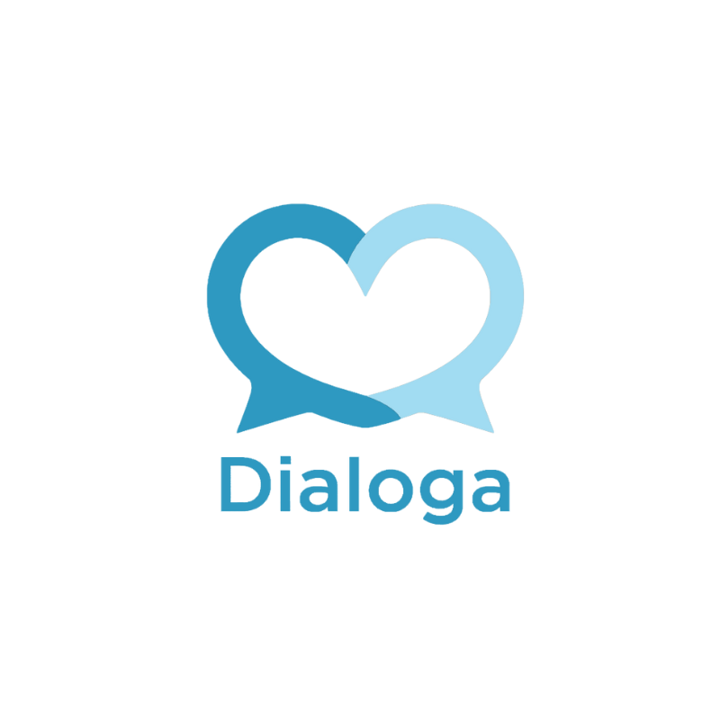

Portfólio Pessoal
Olá, eu sou a Eduarda e este é o meu Portfólio!

Sobre mim
Meu nome é Eduarda Filippi Klein. Atualmente tenho 18 anos e estou no 3° ano do ensino médio. Eu estudo na escola CEDUP Perfeito Manoel de Aguiar, onde também faço o curso de Ciência de Dados. Este curso é integrado ao ensino médio e ele se iniciou quando estava no 2° ano. Escolhi este curso porque desde pequena sempre gostei muito de tecnologia.
Durante o curso técnico, desenvolvi habilidades em escrita científica e iniciei meus estudos em Portugol, MySQL e Power BI, além de também estudar inglês voltado para esta área.
Projetos que participei
FootEnergy: Desenvolvimento de um sistema de energia piezoelétrica para escolas. Este projeto teve início logo no começo do curso, quando estava no 2° ano, mas no começo do 3° ano o grupo decidiu que não queria mais continuar com o projeto.
Dialoga: Desenvolvimento de um aplicativo para o auxílio do programa de escuta especializada em Guaramirim/SC. Esse projeto ganhou vida no Desafio de Dados da Fundação Telefônica VIVO no ano de 2024, porém eu fui chamada para fazer parte dele no ínicio do 3° ano, quando não quis mais dar continuidade ao projeto citado anteriormente.
Para saber mais sobre o Dialoga clique aqui!